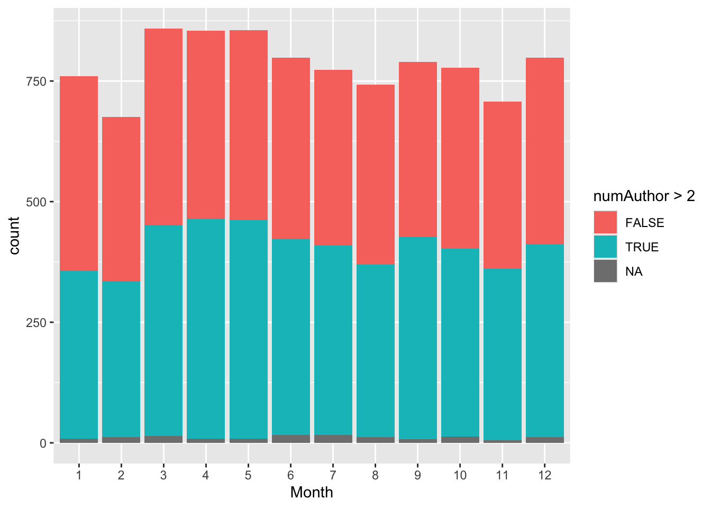
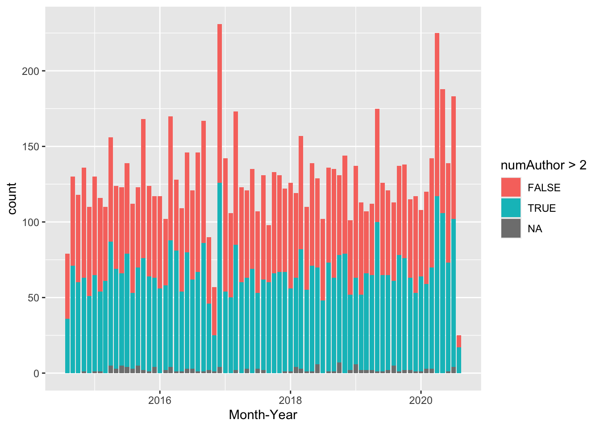
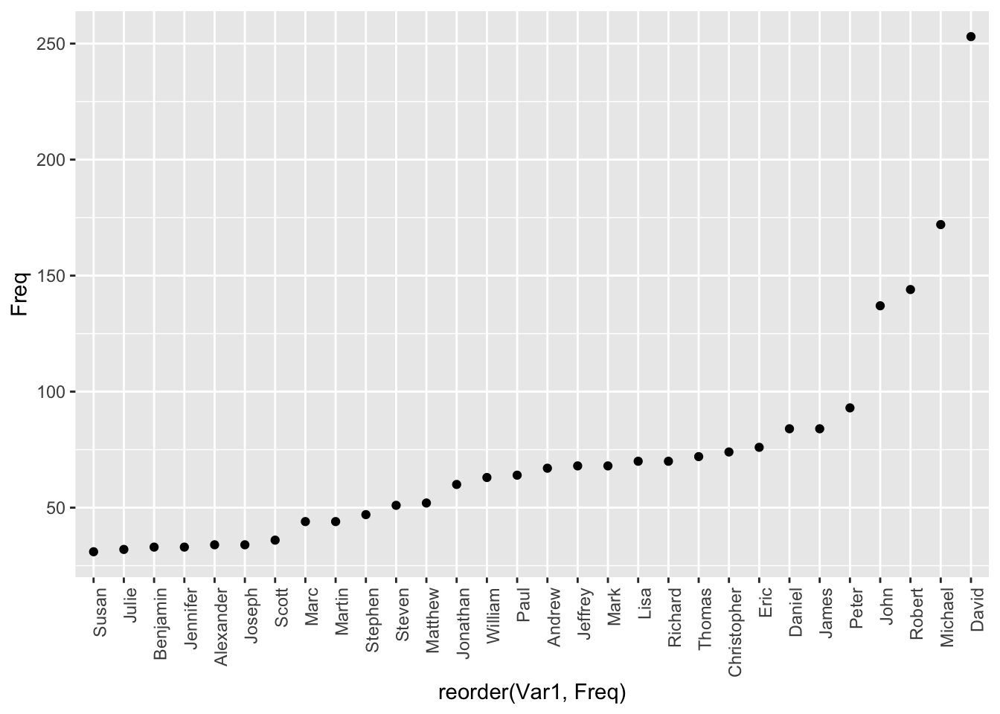
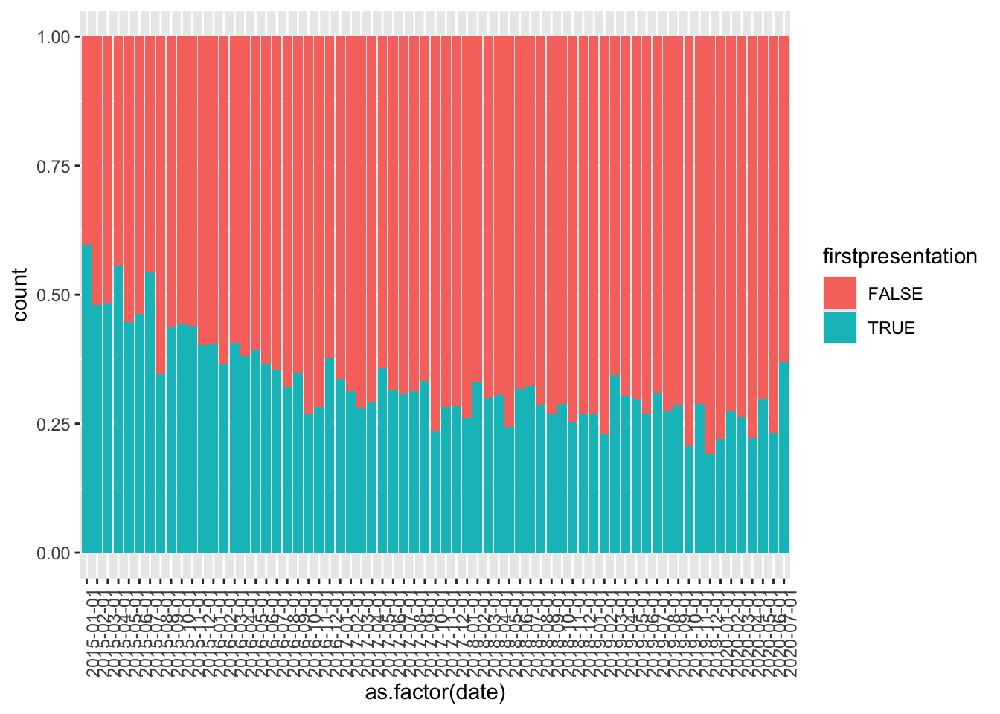

library(ggplot2)
library(dplyr)
Attaching package: 'dplyr'The following objects are masked from 'package:stats':
filter, lagThe following objects are masked from 'package:base':
intersect, setdiff, setequal, unionlibrary(stringr)When you click the Render button a document will be generated that includes both content and the output of embedded code. You can embed code like this:
library(ggplot2)
library(dplyr)
Attaching package: 'dplyr'The following objects are masked from 'package:stats':
filter, lagThe following objects are masked from 'package:base':
intersect, setdiff, setequal, unionlibrary(stringr)data <- read.table("NEJM-withCOVID.txt")
str(data)'data.frame': 9391 obs. of 62 variables:
$ PMID : int 32767892 32767891 32757539 32757538 32757537 32757536 32757535 32757534 32757533 32757532 ...
$ Journal : chr "The New England journal of medicine" "The New England journal of medicine" "The New England journal of medicine" "The New England journal of medicine" ...
$ Title : chr "What Is Liberty? Addressing Undeserved Suffering in Health Care." "Successful Elimination of Covid-19 Transmission in New Zealand." "Audio Interview: The Impact of Covid-19 on Patients with Other Diseases, with Arnold Epstein." "Ingestion of Caustic Substances. Reply." ...
$ Country : chr "United States" "United States" "United States" "United States" ...
$ firstAuthorL: chr "Hébert-Magee" "Baker" "Rubin" "Hoffman" ...
$ firstAuthorF: chr "Shantel" "Michael G" "Eric J" "Robert S" ...
$ firstAuthorI: chr "S" "MG" "EJ" "RS" ...
$ srAuthorL : chr "Hébert-Magee" "Anglemyer" "Morrissey" "Gosselin" ...
$ srAuthorF : chr "Shantel" "Andrew" "Stephen" "Sophie" ...
$ srAuthorI : chr "S" "A" "S" "S" ...
$ numAuthor : int 1 3 4 3 3 3 2 3 3 3 ...
$ midAuthorL1 : chr NA "Wilson" "Baden" "Burns" ...
$ midAuthorF1 : chr NA "Nick" "Lindsey R" "Michele M" ...
$ midAuthorI1 : chr NA "N" "LR" "MM" ...
$ midAuthorL2 : chr NA NA "Epstein" NA ...
$ midAuthorF2 : chr NA NA "Arnold" NA ...
$ midAuthorI2 : chr NA NA "A" NA ...
$ midAuthorL3 : chr NA NA NA NA ...
$ midAuthorF3 : chr NA NA NA NA ...
$ midAuthorI3 : chr NA NA NA NA ...
$ midAuthorL4 : chr NA NA NA NA ...
$ midAuthorF4 : chr NA NA NA NA ...
$ midAuthorI4 : chr NA NA NA NA ...
$ midAuthorL5 : chr NA NA NA NA ...
$ midAuthorF5 : chr NA NA NA NA ...
$ midAuthorI5 : chr NA NA NA NA ...
$ midAuthorL6 : chr NA NA NA NA ...
$ midAuthorF6 : chr NA NA NA NA ...
$ midAuthorI6 : chr NA NA NA NA ...
$ midAuthorL7 : chr NA NA NA NA ...
$ midAuthorF7 : chr NA NA NA NA ...
$ midAuthorI7 : chr NA NA NA NA ...
$ midAuthorL8 : chr NA NA NA NA ...
$ midAuthorF8 : chr NA NA NA NA ...
$ midAuthorI8 : chr NA NA NA NA ...
$ midAuthorL9 : chr NA NA NA NA ...
$ midAuthorF9 : chr NA NA NA NA ...
$ midAuthorI9 : chr NA NA NA NA ...
$ midAuthorL10: chr NA NA NA NA ...
$ midAuthorF10: chr NA NA NA NA ...
$ midAuthorI10: chr NA NA NA NA ...
$ midAuthorL11: chr NA NA NA NA ...
$ midAuthorF11: chr NA NA NA NA ...
$ midAuthorI11: chr NA NA NA NA ...
$ midAuthorL12: chr NA NA NA NA ...
$ midAuthorF12: chr NA NA NA NA ...
$ midAuthorI12: chr NA NA NA NA ...
$ midAuthorL13: chr NA NA NA NA ...
$ midAuthorF13: chr NA NA NA NA ...
$ midAuthorI13: chr NA NA NA NA ...
$ midAuthorL14: chr NA NA NA NA ...
$ midAuthorF14: chr NA NA NA NA ...
$ midAuthorI14: chr NA NA NA NA ...
$ midAuthorL15: logi NA NA NA NA NA NA ...
$ midAuthorF15: logi NA NA NA NA NA NA ...
$ midAuthorI15: logi NA NA NA NA NA NA ...
$ Type1 : chr "Journal Article" "Letter" "Editorial" "Letter" ...
$ Type2 : chr NA NA NA "Comment" ...
$ Type3 : chr NA NA NA NA ...
$ Year : int 2020 2020 2020 2020 2020 2020 2020 2020 2020 2020 ...
$ Month : int 8 8 8 8 8 8 8 8 8 8 ...
$ Email : chr NA NA NA " robert.hoffman@nyumc.org." ...df <- data |>
select(Month, numAuthor) |>
group_by(Month) |>
count(numAuthor > 2)ggplot(df, aes(x = factor(Month), y = n, fill = `numAuthor > 2`)) +
geom_bar(stat = "identity") +
labs(x = "Month", y = "count", fill = "numAuthor > 2")
df_2 <- data |>
select(Month, Year, numAuthor) |>
group_by(Year, Month) |>
count(numAuthor > 2) |>
mutate(`Month-Year` = paste(Month, Year, sep="-")) # make a new month-year variable
# converting to date format
df_2$`Month-Year` <- as.Date(paste(df_2$Year, df_2$Month, "01", sep = "-"))ggplot(df_2, aes(x = `Month-Year`, y = n, fill = `numAuthor > 2`)) + # set up the axes, color fill by numAuthor > 2 column
geom_bar(stat = "identity") + # plot the bars
scale_x_date(date_breaks = "2 year", date_labels = "%Y") + # show bi-yearly breaks
labs(x = "Month-Year", y = "count", fill = "numAuthor > 2") 
# ggplot(df_2, aes(x = factor(Month-Year), y = n, fill = `numAuthor > 2`)) +
# geom_bar(stat = "identity") +
# labs(x = "Month", y = "count", fill = "numAuthor > 2") +
# theme_minimal()# \\b[A-Z](\\.|\\s)?\\b|\\s\\w+$
# \\b: Word boundary to match standalone letters.
# [A-Z]: Matches a single capital letter.
# (\\.|\\s)?: Matches an optional period or space after the capital letter (e.g., for cases like "L." or "L").
# \\b: Another word boundary to ensure we only remove standalone uppercase letters and not part of actual names.
# \\s\\w+$: Removes any word (sequence of word characters) after the first space (i.e., removes the last name after the first name
# questions: do we count "J Brian Byrd" as Brian?
# if J Brian Byrd doesn't count as Brian and counts as "J" for first name
# do gsub("(?<=\\s)[A-Z](\\.|\\s)?\\b|\\s\\w+$", "", firstAuthorF, perl = TRUE)
freq_firstName<-data |>
select(firstAuthorF) |>
mutate(firstAuthorRem=gsub("(?<=\\s)[A-Z](\\.|\\s)?\\b|\\s\\w+$", "", firstAuthorF, perl = TRUE)) |>
mutate(firstAuthorRem=str_trim(firstAuthorRem)) |> # removes leading and trailing spaces
count(firstAuthorRem) |>
filter(n>30 & !is.na(firstAuthorRem)) |>
arrange(n)
ggplot(freq_firstName, aes(x = reorder(firstAuthorRem, n), y = n)) +
geom_point() +
labs(x = "reorder(Var1, Freq)", y = "Freq") +
theme(axis.text.x = element_text(angle = 90, hjust = 1)) # arrange names in vertical format
GO BACK ON THIS –if C Nicholas is first name, do we remove C
# remove NA's
# \\b[A-Z](\\.|\\s)?\\b|\\s\\w+ converts H Cody to Cody OR (?<=\\s)[A-Z](\\.|\\s)?\\b|\\s\\w+$ treats it as H
# Catarina Cardoso--is this Catarina
# R in Rémi was removed due to the special character using \\b[A-Z](\\.|\\s)?\\b|\\s\\w+
# if C Nicholas is first name, do we remove C
# if we remove nicholas, has to be \\b[A-Z](?=\\s)[\\s]?
# maybe it is the first name (uncleaned)
num3_df <- data |>
select(Month, Year, firstAuthorF) |>
mutate(date = paste(Month, Year, sep="-")) |>
mutate(date = as.Date(paste(Year, Month, "01", sep = "-"))) |>
mutate(firstAuthorRem=gsub("(?<=\\s)[A-Z](\\.|\\s)?\\b|\\s\\w+$", "", firstAuthorF, perl = TRUE)) |>
mutate(firstAuthorRem=str_trim(firstAuthorRem)) |>
select(firstAuthorRem, date) |> # did not select firstAuthorF,
arrange(date) |>
filter(!is.na(firstAuthorRem)) |>
group_by(firstAuthorRem) |>
distinct(firstAuthorRem, date, .keep_all = TRUE) |>
mutate(firstpresentation = !duplicated(firstAuthorRem)) |>
ungroup() |>
filter(date>="2015-01-01" & date <= "2020-07-01")
ggplot(num3_df, aes(x = as.factor(date), fill=firstpresentation)) +
geom_bar(position="fill") +
theme(axis.text.x = element_text(angle = 90, hjust = 1))
# num3_df |>
# filter(date=="2015-01-01") |>
# count(firstpresentation) |>
# mutate()library(dplyr)
# using the original df with everything (data) or the df from before?
# create the date variable and get only names in freq_firstname
# this is using the df from before (freq_firstName); maybe not supposed to use df from before
num3_df <- data |>
select(Month, Year, firstAuthorF) |>
mutate(date = paste(Month, Year, sep="-")) |>
mutate(date = as.Date(paste(Year, Month, "01", sep = "-"))) |>
mutate(firstAuthorRem=gsub("(?<=\\s)[A-Z](\\.|\\s)?\\b|\\s\\w+$", "", firstAuthorF, perl = TRUE)) |>
select(firstAuthorRem, date) |> # did not select firstAuthorF,
filter(firstAuthorRem %in% freq_firstName$firstAuthorRem) |>
# filter(date >= as.Date("2015-01-01")) |>
arrange(date) |>
group_by(firstAuthorRem) |>
distinct(firstAuthorRem, date, .keep_all = TRUE) |>
mutate(firstpresentation = !duplicated(firstAuthorRem)) |>
ungroup() |>
filter(date=="2015-01-01")# Within each group (author), it checks whether it's the first appearance (not duplicated).
# mutate(firstAuthorRem=str_trim(firstAuthorRem)) |>
# filter(!is.na(firstAuthorRem)) |>
# select(date, firstAuthorRem)
ggplot(num3_df, aes(x = as.factor(date), fill=firstpresentation)) +
geom_bar(position="fill") +
theme(axis.text.x = element_text(angle = 90, hjust = 1))
# using the df from before
# create new col that counts n for all names
new_firstName<-data |>
select(Month, Year, firstAuthorF) |>
mutate(date = paste(Month, Year, sep="-")) |>
mutate(date = as.Date(paste(Year, Month, "01", sep = "-"))) |>
mutate(firstAuthorRem=gsub("(?<=\\s)[A-Z](\\.|\\s)?\\b|\\s\\w+$", "", firstAuthorF, perl = TRUE)) |>
mutate(firstAuthorRem=str_trim(firstAuthorRem)) |> # removes leading and trailing spaces
count(firstAuthorRem) |>
filter(n>30 & !is.na(firstAuthorRem)) |>
select(date, firstAuhorRem)
# firstPresentation is boolean value that marks true for first instance of
# name or false if the name has been shown before
# for example, if the first month authors are (Albert, Ben, Carl, David), firstPresentation is true for all of them
# but if the second month authors are (Albert, Ben, Ed, Frank) then half will be TRUE (Ed and Frank are new) and half will be FALSE (Albert and Ben are old)
df_2 <- data |>
select(Month, Year, numAuthor) |>
group_by(Year, Month) |>
count(numAuthor > 2) |>
mutate(`Month-Year` = paste(Month, Year, sep="-")) # make a new month-year variable
# converting to date format
df_2$`Month-Year` <- as.Date(paste(df_2$Year, df_2$Month, "01", sep = "-"))Q: Do we calculate average num of months even for authors that only have 2 publications? I still calculated the mean here (for these authors, ave_num_months, num of months btn pubs/1)
# data |>
# select(firstAuthorF, firstAuthorL, firstAuthorI, Title, Month, Year) |>
# mutate(date = paste(Month, Year, sep="-")) |>
# mutate(date = as.Date(paste(Year, Month, "01", sep = "-"))) |>
# group_by(firstAuthorF, firstAuthorL) |>
# count(Title) |>
# print(n=50)
#num_pubs gives number of publications for each author
num_pubs <-data |>
select(firstAuthorF, firstAuthorL, firstAuthorI, Title, Month, Year) |>
mutate(date = paste(Month, Year, sep="-")) |>
mutate(date = as.Date(paste(Year, Month, "01", sep = "-"))) |>
group_by(firstAuthorF, firstAuthorL) |>
summarize(num_pub = n())`summarise()` has grouped output by 'firstAuthorF'. You can override using the
`.groups` argument.# working on this, dates is df of publications and dates organized/grouped by author
dates<-data |>
select(firstAuthorF, firstAuthorL, firstAuthorI, Title, Month, Year) |>
mutate(date = paste(Month, Year, sep="-")) |>
mutate(date = as.Date(paste(Year, Month, "01", sep = "-"))) |>
arrange(date) |>
group_by(firstAuthorF, firstAuthorL) |>
arrange(firstAuthorF, firstAuthorL)
# # summary table of average num of months in between publications
# dates |>
# filter(firstAuthorL=="Makkar") |>
# mutate(time_diff = date - lag(date)) |>
# mutate(diff_month = as.numeric(round(time_diff/30.44))) |> # round to nearest month
# # filter(!is.na(diff_month)) |>
# summarize(ave_num_months = mean(diff_month, na.rm=TRUE))
# if one pub, ave_num_months=-1
# checked Eric J Velazquez (2 publications), Eric J Rubin (many)
summary_ave_months<-dates |>
# filter(firstAuthorF=="Shantel") |>
# arrange(date) |>
mutate(time_diff = date - lag(date)) |>
mutate(diff_month = as.numeric(round(time_diff/30.44))) |> # round to nearest month
summarize(ave_num_months = mean(diff_month, na.rm=TRUE),
ave_num_months = ifelse(is.nan(ave_num_months), -1, ave_num_months)) `summarise()` has grouped output by 'firstAuthorF'. You can override using the
`.groups` argument.# join num_pubs and summary_ave_months dfs by author's full name
author_df <- num_pubs |>
full_join(summary_ave_months, by=c("firstAuthorF", "firstAuthorL"))
author_df |>
print(n=50)# A tibble: 6,892 × 4
# Groups: firstAuthorF [4,670]
firstAuthorF firstAuthorL num_pub ave_num_months
<chr> <chr> <int> <dbl>
1 A Dorothee Heemskerk 2 5
2 A Emre Eskazan 1 -1
3 A Fuat Kalyoncu 1 -1
4 A Hunter Shain 2 4
5 A Keith Stewart 2 4
6 A Kumar Guddati 1 -1
7 A Laurie Shroyer 2 3
8 A Lianne Messchendorp 1 -1
9 A Marc Gillinov 3 8
10 A Metin Gülmezoglu 1 -1
11 A Michael Lincoff 1 -1
12 A Razzaque Ahmed 1 -1
13 A Tariro Makadzange 1 -1
14 A Taylor Kelley 1 -1
15 A Titia Lely 1 -1
16 A-Rembert Koczulla 1 -1
17 Aaron Belkin 1 -1
18 Aaron McKethan 1 -1
19 Aaron Richterman 2 26
20 Aaron Sibley 1 -1
21 Aaron Spital 7 10.7
22 Aaron A R Tobian 2 5
23 Aaron B Caughey 2 4
24 Aaron D Viny 1 -1
25 Aaron I Vinik 1 -1
26 Aaron J Stonestrom 1 -1
27 Aaron L Berkowitz 1 -1
28 Aaron L Schwartz 2 25
29 Aaron M Goodman 1 -1
30 Aaron S Kelly 1 -1
31 Aaron S Kesselheim 2 8
32 Aaron W Aday 1 -1
33 Aasma Shaukat 1 -1
34 Abby L Olsen 1 -1
35 Abdallah M Beano 1 -1
36 Abdenasser Bardai 1 -1
37 Abdul Rehman 1 -1
38 AbdulAziz A Asbeutah 1 -1
39 Abdullah Alkhodair 1 -1
40 Abdullah Alsultan 1 -1
41 Abdurrahman Oguzhan 1 -1
42 Abel Kakuru 1 -1
43 Abhaya V Kulkarni 1 -1
44 Abhilash Koratala 1 -1
45 Abhirup Banerjee 1 -1
46 Abhishek Keraliya 1 -1
47 Abhishek Maiti 1 -1
48 Abhishek Sharma 2 37
49 Abigail Silva 1 -1
50 Abigail Zuger 1 -1
# ℹ 6,842 more rowsThe email addresses contain the institution name–I would extract the institutional domain (all characters after “@”). I would filter through the domains and drop rows with emails ending in .com or .net as emails that don’t have this ending are from institutions. Assuming the df doesn’t contain duplicate publications, I would then group the df by domain name and use summarize to count the occurrences of each domain to find the most common institutions. I would then arrange the df by num of occurrenes of domain in descending order so that the leading institutions are at the top.